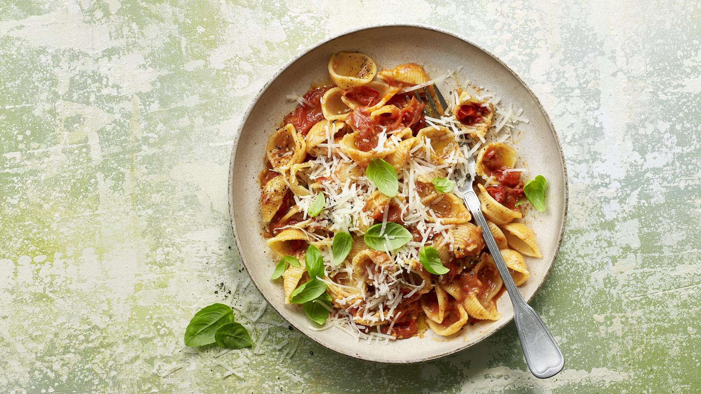

Cherry Tomato Pasta

Description
Pasta and balsamic vinegar in the cupboard? Cherry tomatoes, butter and cheese in the fridge? Then you’re all set to make this delicious tomato pasta recipe on a student budget. Make sure you use a vegetarian-friendly hard cheese if you’re cooking for vegetarians
Ingredients
- 400g/14oz cherry tomatoes
- 35g/1¼oz unsalted butter, cut into small pieces
- 1 tsp balsamic vinegar
- 200–300g/7–10½oz pasta shapes
- sea salt and freshly ground black pepper
- Parmesan cheese, grated, to serve (or a similar vegetarian hard cheese)
Steps
- Preheat the oven to 180C/160C Fan/Gas 4.
- Tip the cherry tomatoes into a baking dish just big enough to hold them in a single layer. Scatter the butter over the tomatoes. Drizzle with the balsamic vinegar and season well with salt and pepper. Roast for 50 minutes, or until the tomatoes are tender and the butter and juices have formed a sauce.
- When the tomatoes are near the end of their cooking time, cook the pasta in a large pan of boiling salted water according to packet instructions, or until just tender. Drain the pasta and return it to the pan.
- Using a fork, lightly crush the tomatoes into their sauce. Add the tomatoes to the pasta, stir to mix, and cook over a medium heat for 3–4 minutes, until the glossy sauce coats the pasta.